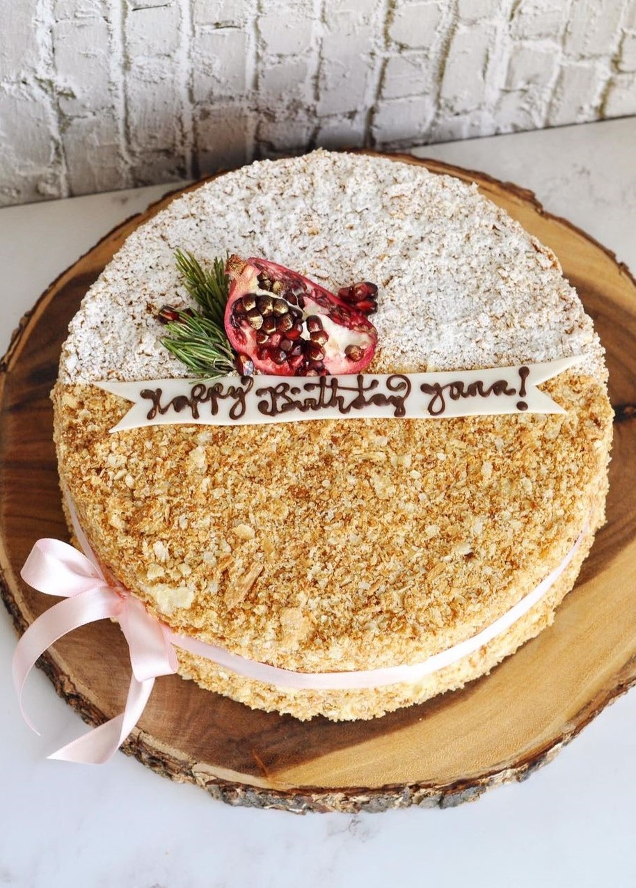
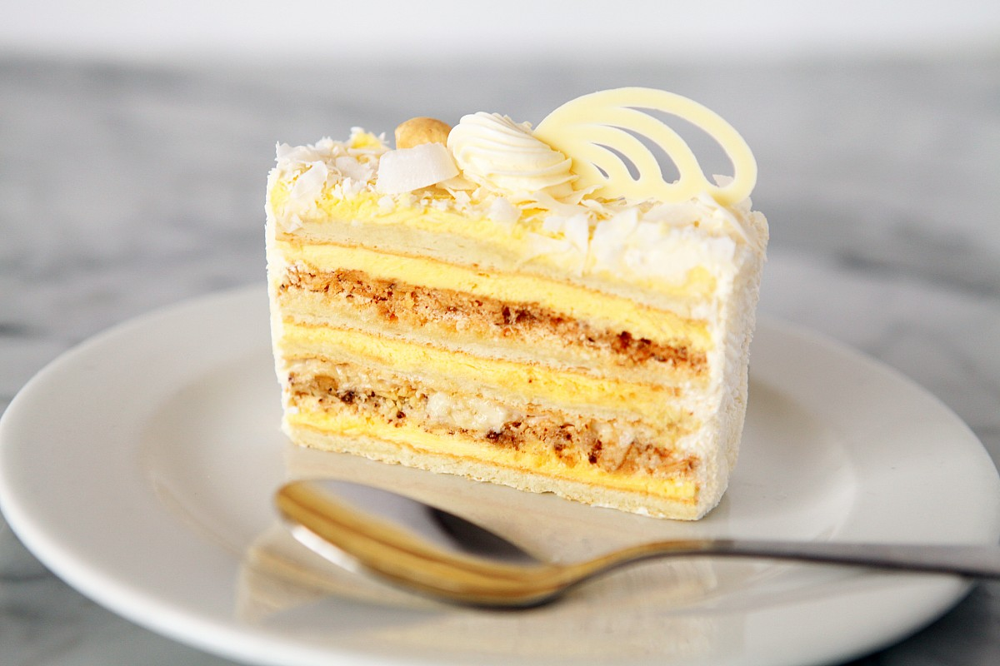
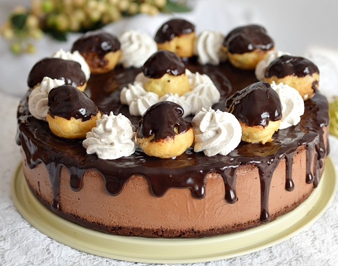
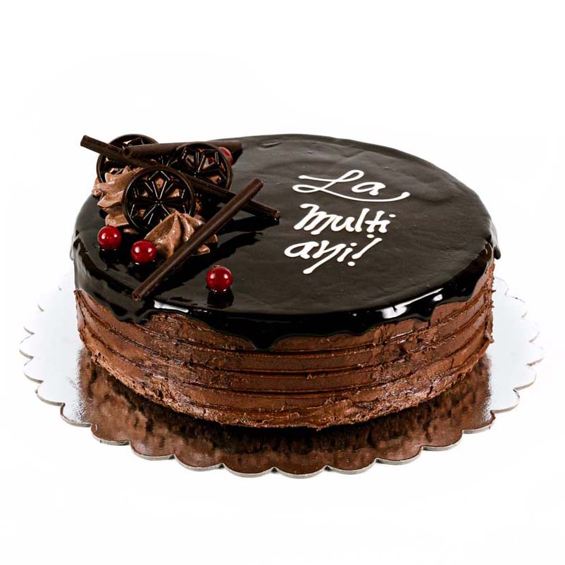

Exploează lumea tortutilor
Napoleon
În Franța și Italia se numește millefeuille, ceea ce înseamnă "1000 de straturi", în Anglia - felie de vanilie sau felie de smântână ... Prăjitura Napoleon este una dintre cele mai populare și preferate deserturi din Rusia. Layer Cake cu crema (puteți face chiar și „Napoleon“ a aluatului) este deosebit de iubit în timpurile sovietice: este o delicatesă apar adesea pe masa de sărbătoare. Istoria tortului "Napoleon". După cum sa dovedit, nu atât de lipsit de ambiguitate: există mai multe versiuni de originea sa, care nu diferă numai în locul în care sa născut un tratament special, dar, de asemenea, în momentul în care a fost creat tort.
Tort Raffaello
Să vă prezint acum vedeta mesei de Craciun, aceasta rețeta de Tort Raffaello.Retete de tort am facut eu ceva, si va dati seama ca asa o declaratie este chiar importanta. Blatul moale si pufos cu aroma fina de cocos, crema Ganache de ciocolata alba, in siropul pentru blat am adaugat putina esenta de migdale. Am ornat deasupra chiar cu bomboane Raffaello, dar este optional, mai de efect. Crema Ganache de ciocolata alba este de avut in vedere, a devenit preferata mea dupa lucrul cu aceasta reteta, simpla si foarte de efect.Delicios, fraged si cu siguranta va place chiar si celor mai mofturosi musafiri.
Profiterol
Baza tortului este reprezentata de un blat umed de ciocolata foarte usor de facut. Acesta necesita mixarea zaharului cu ingredientele lichide, urmata de adaugarea ingredientelor solide prin cernere si incorporarea rapida a apei clocotite in intreaga compozitie. Crema tortului porneste de la clasica crema de vanilie pe care o sa o utilizam pentru umplerea choux-urilor la care adaugarea ciocolatei ii va schimba complet gustul. Daca v-am facut curiosi, astept parerile voastre si imagini cu tortul facut de voi.
Tort cu ciocolată
Tortul de ciocolată reprezintă o simfonie senzorială, unde estetica, aroma și gustul se îmbină într-o experiență cu adevărat delicioasă. De la strălucirea glazurii până la mirosul îmbietor al ciocolatei proaspete, fiecare aspect invită la o călătorie culinară de neuitat. Într-un singur moment, cuțitul dezvăluie straturile moi și umede ale tortului, eliberând arome decadente și declanșând un festin al simțurilor. Tortul de ciocolată nu este doar un desert; este o bucurie efemeră, o plăcere senzorială ce rămâne adânc înrădăcinată în amintirile noastre gustative."